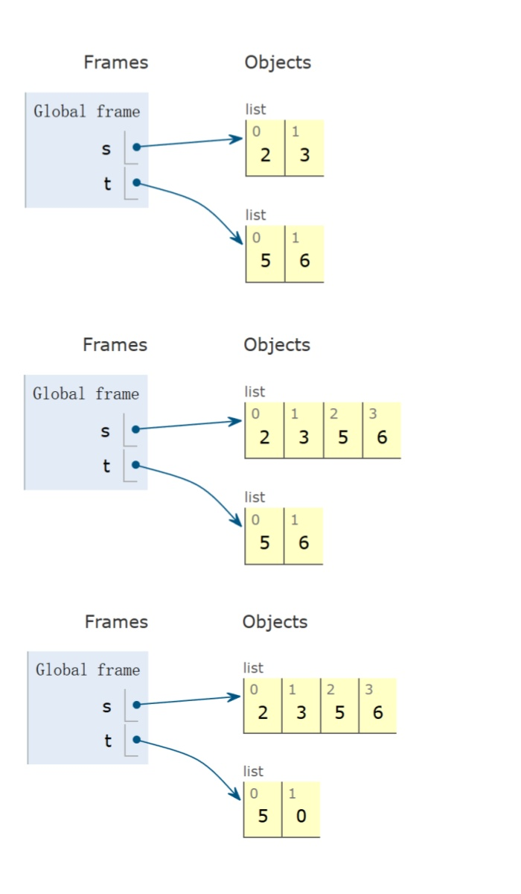

2.1 Containers
在Python中，container是一种能够存储其他数据的对象，包括list，dictionary，tuple，range，string等。
List:
list与C语言中的数组使用方法类似。list的下标从0开始，如果索引为负数，则表示从后往前数，此时下标从-1开始：
| >>> list=[1,2,3,4,5]
>>> list[0]
1
>>> list[2]
3
>>> list[-1]
5
>>> list[-3]
3
|
使用len返回list的元素个数：
使用getitem的效果和直接获得对应下标的元素一样，第一个参数为list，第二个参数为下标：
| >>> from operator import getitem
>>> getitem(list,0)
1
|
对list进行乘法操作，会重复list中的元素：
| >>> list*3
[1,2,3,4,5,1,2,3,4,5,1,2,3,4,5]
|
对list进行加法操作，会进行拼接：
| >>> [0]+list+[6,7,8]
[0,1,2,3,4,5,6,7,8]
|
list中的元素也可以是list，且长度可以不同：
| >>> pairs=[[10,20],[30,40,50]]
>>> pairs[1]
[30,40,50]
>>> pairs[1][0]
30
|
使用for遍历list中的元素：
| list=[1,2,3,4,5]
total=0
for element in list:
if element%2==0:
total+=1
|
如果list中的元素是序偶，可以使用for语句进行拆解：
| pairs=[[1,2],[2,2],[3,2],[4,4]]
same_count=0
for x,y in pairs:
if x==y:
same_count=same_count+1
|
可以通过表达式和判断语句生成更复杂的list：
| >>> odds=[1,3,5,7,9]
>>> [x+1 for x in odds]
[2,4,6,8,10]
>>> [x for x in odds if 25%x==0]
[1,5]
|
list可以切片，[a:b]表示获得下标从a到b-1的sublist，[a:]表示获得下标从a到最后的sublist，[:b]表示获得下标从0到b-1的sublist，[:]表示获得整个list：
| >>> list=[1,2,3,4,5]
>>> list[1:3]
[2, 3]
>>> list[1:]
[2, 3, 4, 5]
>>> list[:3]
[1, 2, 3]
>>> list[:]
[1, 2, 3, 4, 5]
|
使用sum返回list中元素的和：
sum还可以接受一个start value作为求和的第一个元素，其还能指定求和元素的类型：
| >>> sum([2,3,4],5)
14
>>> sum([[2,3],[4]],[]) # 在start value处放空list，指定求和元素的类型为list，如果不放空list则会报错
[2,3,4]
|
使用max返回list中元素的最大值：
max还可以接受一个key参数，key为一个函数，原本的元素通过函数映射后再比较大小，返回的是原本元素：
| >>> max(range(10),key=lambda x:7-(x-4)*(x-2))
3
|
使用all检查list中是否有false value：
| >>> all([x<5 for x in range(5)])
True
|
使用in和not in判断list中是否包含对应元素：
| >>> digits=[1,8,2,8]
>>> 1 in digits
True
>>> '1' in digits
False
|
Note
in和not in只能寻找单独的元素，不能同时寻找多个元素。
Range:
range也是一种container，range(a,b)表示从a开始到b-1结束的整数序列，即a，a+1，……，b-2，b-1；range(n)表示从0开始到n-1结束的整数序列，即0，1，……，n-2，n-1。
使用list将range转化为list：
| >>> list(range(-2,2))
[-2,-1,0,1]
>>> list(range(4))
[0,1,2,3]
|
使用for遍历range中的元素：
| total=0
for i in range(n):
total+=i
|
String:
string也是一种container：
| >>> 'I am string!'
'I am string!'
|
使用双引号和单引号效果相同：
| >>> "I've got an apostrophe"
"I've got an apostrophe"
|
使用三引号表示多行字符串，输出为完整一行，显示换行符\n：
| >>> """The Zen of Python
... claims, Readability counts.
... Read more: import this."""
'The Zen of Python\nclaims, Readability counts.\nRead more: import this.'
|
使用len返回string的长度（与C语言不同的是不含终止符）：
| >>> city='Berkeley'
>>> len(city)
8
|
使用下标访问string中的元素：
使用in判断string中是否包含对应子字符串：
| >>> 'here' in "Where's Waldo?"
True
|
使用upper将字符串全部转换为大写，lower将字符串全部转换为小写，swapcase将字符串大小写翻转：
| >>> s='Hello'
>>> s.upper()
'HELLO'
>>> s.lower()
'hello'
>>> s.swapcase()
'hELLO'
|
Dictionary:
dictionary是一种container，其元素为key-value对。
查找dictionary中的元素时，索引只能为key：
| >>> numerals={'I':1,'V':5,'X':10}
>>> numerals['X']
10
|
使用list将dictionary转化为list，list的元素为原本dictionary的keys：
| >>> list(numerals)
['I','V','X']
|
dictionary.values()和dictionary.keys()分别为dict_values和dict_keys类型，这两种类型都属于container，可以使用sum，list，len等：
| >>> numerals.values()
dict_values([1,5,10])
>>> sum(numerals.values())
16
>>> list(numerals.values())
[1,5,10]
|
dictionary的key和value可以有各种组合，但key必须各不相同，且不能为list或dictionary：
| >>> d={1:['first','second'],3:'third'}
>>> d[1]
['first', 'second']
>>> d[3]
'third'
|
可以通过表达式和判断语句生成更复杂的dictionary，语法为{<key exp>: <value exp> for <name> in <iter exp> if <filter exp>}：
| >>> {x*x:x for x in [1,2,3,4,5] if x>2}
{9: 3, 16: 4, 25: 5}
|
Example
给定一串keys，一串values，和一个二元函数match，返回一个dictionary，其中key为keys，value为values中满足match(k,v)的元素。
| def index(keys,values,match):
"""
>>> index([7,9,11],range(30,50),lambda k,v:v%k==0)
{7:[35,42,49],9:[36,45],11:[33,44]}
"""
return {k:[v for v in values if match(k,v)] for k in keys}
|
Tuple:
tuple是一种与list极其相似的container，用( )表示，其特殊之处在于不可变（2.3会涉及）。
没有( )的输入会默认形成tuple：
使用tuple将list转化为tuple：
| >>> tuple([3,4,5])
(3, 4, 5)
|
若tuple只有一个元素，则该元素之后要加逗号，否则不会被解释为tuple：
| >>> 2,
(2,)
>>> (2,)
(2,)
|
对tuple进行加法操作，会进行拼接：
| >>> (3,4)+(5,6)
(3, 4, 5, 6)
|
2.2 Trees
Implementing the Tree Abstraction:
假设有一棵如下图所示的树：
graph TD;
A[3]-->B[1];
A[3]-->C[2];
C[2]-->D[1];
C[2]-->E[1];
我们尝试在Python中表示出这棵树：
| >>> tree(3,[tree(1),
... tree(2,[tree(1),
... tree(1)])])
|
为此，需要给出如下定义：
| # 树的定义
def tree(label,branches=[]):
for branch in branches:
assert is_tree(branch)
return [label]+list(branches)
# 节点的标签
def label(tree):
return tree[0]
# 节点的分支
def branches(tree):
return tree[1:]
# 判断是否为树
def is_tree(tree):
if type(tree)!=list or len(tree)<1:
return False
for branch in branches(tree):
if not is_tree(branch):
return False
return True
# 判断是否为叶子节点
def is_leaf(tree):
return not branches(tree)
|
以下是一些简单操作：
| >>> tree(1)
[1]
>>> is_leaf(tree(1))
True
>>> t=tree(1,[tree(5,[tree(7)]),tree(6)])
>>> t
[1,[5,[7]],[6]]
>>> label(t)
1
>>> branches(t)
[[5,[7]],[6]]
>>> branches(t)[0]
[5,[7]]
>>> is_tree(branches(t)[0])
True
>>> label(branches(t)[0])
5
|
Examples:
Example
斐波那契树：
| def fib_tree(n):
if n<=1:
return tree(n)
else:
left,right=fib_tree(n-2),fib_tree(n-1)
return tree(label(left)+label(right),[left,right])
|
| >>> fib_tree(1)
[1]
>>> fib_tree(0)
[0]
>>> fib_tree(2)
[1, [0], [1]]
>>> fib_tree(4)
[3, [1, [0], [1]], [2, [1], [1, [0], [1]]]]
>>> label(fib_tree(4))
3
|
Example
计算叶子节点的总数：
| def count_leaves(t):
"""Count the leaves of a tree."""
if is_leaf(t):
return 1
else:
branch_counts=[count_leaves(b) for b in branches(t)]
return sum(branch_counts)
|
Example
获得所有叶子节点的标签：
| def leaves(tree):
"""Return a list containing the leaf labels of tree.
>>> leaves(fib_tree(5))
[1,0,0,1,1,0,1]
"""
if is_leaf(tree):
return [label(tree)]
else:
return sum([leaves(b) for b in branches(tree)],[])
|
Example
将所有叶子节点的标签+1：
| def increment_leaves(t):
"""Return a tree like t but with leaf labels incremented."""
if is_leaf(t):
return tree(label(t)+1)
else:
bs=[increment_leaves(b) for b in branches(t)]
return tree(label(t),bs)
|
Example
将所有节点的标签+1：
| def increment(t):
"""Return a tree like t but with all labels incremented."""
return tree(label(t)+1,[incremented(b) for b in branches(t)])
|
Example
打印一棵树：
| def print_tree(t,indent=0):
print(' '*indent+str(label(t)))
for b in branches(t):
print_tree(b,indent+1)
|
| >>> print_tree(fib_tree(5))
5
2
1
1
0
1
3
1
0
1
2
1
1
0
1
|
Example
打印每条路径的标签之和：
| def print_sums(t,so_far):
so_far=so_far+label(t)
if is_leaf(t):
print(so_far)
else:
for b in branches(t):
print_sums(b,so_far)
|
Example
寻找路径标签之和为total的路径数量：
| def count_paths(t,total):
"""Return the number of paths from the root to any node in tree t for which the labels along the path sum to total.
>>> t=tree(3,[tree(-1),tree(1,[tree(2,[tree(1)]),tree(3)]),tree(1,[tree(-1)])])
>>> count_paths(t,3)
2
>>> count_paths(t,4)
2
>>> count_paths(t,5)
0
>>> count_paths(t,6)
1
>>> count_paths(t,7)
2
"""
if label(t)==total:
found=1
else:
found=0
return found+sum([count_paths(b,total-label(t)) for b in branches(t)])
|
2.3 Mutability
Mutable Object & Immutable Object:
可变性关乎到对象在创建后是否可以被修改，根据这一特性可以将对象分为两类：
- 可变对象：list，dictionary等
a=b，b的变化会影响a，本质是一个object的两个名字。
- 不可变对象：int，float，bool，string，tuple等
a=b，b的变化不影响a，本质是创建一个新的object
Example
| >>> suits=['coin','string','myriad']
>>> original_suits=suits
>>> original_suits
['coin', 'string', 'myriad']
>>> suits.pop() # pop删除list中指定位置的元素（默认为最后一个元素），并返回被删除的元素
'myriad'
>>> suits.remove('string') # remove删除list中第一个匹配的元素
>>> suits
['coin']
>>> suits.append('cup') # append在list末尾添加一个元素
>>> suits.extend(['sword','club']) # extend扩展list
>>> suits
['coin', 'cup', 'sword', 'club']
>>> suits[2]='spade'
>>> suits[0:2]=['heart','diamond']
>>> suits
['heart', 'diamond', 'spade', 'club']
>>> original_suits
['heart', 'diamond', 'spade', 'club']
|
以上这些改变表面上都是关于suits的，但实际上original_suits也发生了相应的改变。
如果不可变的container包含可变的元素，则其仍然可能发生变化。
Example
| >>> s=([1,2],3)
>>> s[0]=4 # tuple的元素不能直接更改
Traceback (most recent call last):
File "<stdin>", line 1, in <module>
TypeError: 'tuple' object does not support item assignment
>>> s[0][0]=4
>>> s
([4, 2], 3)
|
Mutation within Function Call:
若函数的参数是可变对象，则该函数可以直接修改该对象的内容，因为函数接收的是对象的引用，而不是对象的副本。
Example
| def mystery(s):
s.pop()
s.pop()
>>> four=[1,2,3,4]
>>> mystery(four)
>>> four
[1,2]
|
| def another_mystery(s):
four.pop()
four.pop()
>>> four=[1,2,3,4]
>>> another_mystery()
>>> four
[1,2]
|
is:
is用于判断左右两边是否指向同一个object。
Example
| >>> a=[10]
>>> b=[10]
>>> a==b
True
>>> a is b
False
|
Mutable Default Arguments:
在定义函数时，默认参数值是该函数值的一部分，而不是每次调用函数时都生成的。因此，如果默认参数可变，则变化会保留。
Example
| >>> def f(s=[]):
... s.append(5)
... return len(s)
...
>>> f()
1
>>> f()
2
>>> f()
3
|
Mutable Function:
可变函数不是纯函数，因为每次调用都会产生副作用。
Example
| def make_withdraw_list(balance):
b=[balance]
def withdraw(amount):
if amount>b[0]:
return 'Insufficient funds'
b[0]=b[0]-amount
return b[0]
return withdraw
>>> withdraw=make_withdraw_list(100)
>>> withdraw(25)
75
>>> withdraw(25)
50
>>> withdraw(25)
25
>>> withdraw(25)
0
>>> withdraw(25)
'Insufficient funds'
|
2.4 Iterators
Iterator Concept:
iterator是一种可变的container，一步一步从另一个container中取出元素。
使用iter为另一个container（如list，dictionary等）创建一个iterator：
| >>> s=[3,4,5]
>>> t=iter(s)
>>> t
<list_iterator object at 0x000001B133BB9930>
|
使用next从iterator中取出下一个元素：
| >>> next(t)
3
>>> next(t)
4
>>> next(t)
5
>>> next(t)
Traceback (most recent call last):
File "<stdin>", line 1, in <module>
StopIteration
|
使用list将iterator转化为list，此时list中只包含iterator中剩余的元素，且原本的iterator被清空：
| >>> s=[[1,2],3,4,5]
>>> t=iter(s)
>>> next(t)
[1, 2]
>>> next(t)
3
>>> list(t)
[4, 5]
>>> next(t)
Traceback (most recent call last):
File "<stdin>", line 1, in <module>
StopIteration
|
使用for遍历iterator中的元素，for语句会在iterator中移动标记，将其推到末尾，因此遍历完后iterator为空：
| >>> r=range(3,6)
>>> ri=iter(r)
>>> for i in ri:
... print(i)
...
3
4
5
>>> for i in ri:
... print(i)
...
|
Dictionary Iteration:
对于一个dictionary，它的key，它的value，它的item，都能构造iterator（都是iterable object）。
使用iter和dict.keys()创建关于key的iterator：
| >>> d={'one':1,'two':2,'three':3}
>>> k=iter(d.keys()) # or iter(d)
>>> next(k)
'one'
>>> next(k)
'two'
>>> next(k)
'three'
|
使用iter和dict.values()创建关于value的iterator：
| >>> v=iter(d.values())
>>> next(v)
1
>>> next(v)
2
>>> next(v)
3
|
使用iter和dict.items()创建关于item的iterator：
| >>> i=iter(d.items())
>>> next(i)
('one', 1)
>>> next(i)
('two', 2)
>>> next(i)
('three', 3)
|
当一个iterator绑定了一个dictionary，这个dictionary中途改变了大小或结构，则iterator无效：
| >>> d={'one':1,'two':2}
>>> k=iter(d)
>>> next(k)
'one'
>>> d['zero']=0
>>> next(k)
Traceback (most recent call last):
File "<stdin>", line 1, in <module>
RuntimeError: dictionary changed size during iteration
|
若dictionary改变的是某个值（key或value），则没有影响：
| >>> d
{'one': 1, 'two': 2, 'zero': 0}
>>> k=iter(d)
>>> next(k)
'one'
>>> next(k)
'two'
>>> d['zero']=5
>>> next(k)
'zero'
|
Build-In Iterator Functions:
返回一个iterator，其元素为func(x)，其中x为iterable中的元素。
返回一个iterator，其元素为x，其中x为iterable中的元素，且func(x)为True。
| zip(first_iter,second_iter)
|
返回一个iterator，其元素为(x,y)，其中x为first_iter中的元素，y为second_iter中的元素。
返回一个iterator，其元素为x，其中x为sequence中的元素，且顺序为逆序。
返回一个list，其元素为x，其中x为iterable中的元素，且按照从小到大的顺序排列（可以指定key）。
2.5 Generators
generator是通过一种特殊的函数（generator function）实现的iterator，这种特殊的函数不使用return，而是使用yield，这个函数返回的iterator就是generator，每次使用next时，其对应的特殊函数就会生成下一个yield对应的值。
Example
| >>> def evens(start,end):
... even=start+(start%2)
... while even<end:
... yield even
... even+=2
...
>>> t=evens(2,10)
>>> t
<generator object evens at 0x0000020836A251C0>
>>> next(t)
2
>>> next(t)
4
>>> next(t)
6
>>> next(t)
8
|
当调用next时，generator function才会执行到下一个yield，然后暂停，但记住函数执行的所有环境。
yield from:
使用yield from可以从iterator或iterable中产生所有值。
Example
使用yield from和递归的组合：
| >>> def countdown(k):
... if k>0:
... yield k
... yield from countdown(k-1)
... else:
... yield 'Blast off'
...
>>> for k in countdown(3):
... print(k)
...
3
2
1
Blast off
|
Example
拼写单词：
| >>> def prefixes(s):
... if s:
... yield from prefixes(s[:-1])
... yield s
...
>>> list(prefixes('both'))
['b', 'bo', 'bot', 'both']
|
Example
数字分割：
版本一：
| def list_partitions(n,m):
"""List partitions."""
if n<0 or m==0:
return []
else:
exact_match=[]
if n==m:
exact_match=[[m]]
with_m=[p+[m] for p in list_partitions(n-m,m)]
without_m=list_partitions(n,m-1)
return exact_match+with_m+without_m
>>> for p in list_partitions(6,4):
... print(p)
...
[2, 4]
[1, 1, 4]
[3, 3]
[1, 2, 3]
[1, 1, 1, 3]
[2, 2, 2]
[1, 1, 2, 2]
[1, 1, 1, 1, 2]
[1, 1, 1, 1, 1, 1]
|
版本二：
| def list_partitions2(n,m):
"""List partitions."""
if n<0 or m==0:
return []
else:
exact_match=[]
if n==m:
exact_match=[str(m)]
with_m=[p+'+'+str(m) for p in list_partitions2(n-m,m)]
without_m=list_partitions2(n,m-1)
return exact_match+with_m+without_m
>>> for p in list_partitions2(6,4):
... print(p)
...
2+4
1+1+4
3+3
1+2+3
1+1+1+3
2+2+2
1+1+2+2
1+1+1+1+2
1+1+1+1+1+1
|
版本三：
| def list_partitions3(n,m):
"""List partitions."""
if n>0 and m>0:
if n==m:
yield str(m)
for p in list_partitions3(n-m,m):
yield p+'+'+str(m)
yield from list_partitions3(n,m-1)
|
如果程序有很多可能性，但只想要其中一些，则使用generator function会更加容易读写，运行速度也更快。
2.6 Advanced List Operations
Build-In Functions:
假设：s=[2,3]，t=[5,6]
| Operation |
Example |
Result |
Demo |
append adds one element to a list |
s.append(t)
t=0 |
s->[2,3,[5,6]]
t->0 |
 |
extend adds all elements in one list to another list |
s.extend(t)
t[1]=0 |
s->[2,3,5,6]
t->[5,0] |
 |
addition&slicing create new lists containing existing elements |
a=s+[t]
b=a[1:]
a[1]=9
b[1][1]=0 |
s->[2,3]
t->[5,0]
a->[2,9,[5,0]]
b->[3,[5,0]] |
 |
list function also creates a new list containing existing elements |
t=list(s)
s[1]=0 |
s->[2,0]
t->[2,3] |
 |
slice assignment replaces a slice with new values |
s[0:0]=t
s[3:]=t
t[1]=0 |
s->[5,6,2,5,6]
t->[5,0] |
 |
pop removes and returns the last element |
t=s.pop() |
s->[2]
t->3 |
 |
remove removes the first element equal to the element |
t.extend(t)
t.remove(5) |
s->[2,3]
t->[6,5,6] |
 |
slice assignment can remove elements by assigning [] to a slice |
s[:1]=[]
t[0:2]=[] |
s->[3]
t->[] |
 |
Self-Call:
| >>> t=[1,2,3]
>>> t[1:3]=[t]
>>> t.extend(t)
>>> t
[1, [...], 1, [...]]
|

| >>> t=[[1,2],[3,4]]
>>> t[0].append(t[1:2])
>>> t
[[1, 2, [[3, 4]]], [3, 4]]
|

Exercises:
Example
找出所有绝对值最小的值对应的下标。
| def min_abs_indices(s):
min_abs=min(map(abs,s))
return [i for i in range(len(s)) if abs(s[i])==min_abs]
|
Example
求相邻元素之和的最大值。
| def largest_adj_sum(s):
return max([a+b for a,b in zip(s[:-1],s[1:])])
|
Example
创建字典，0-9作为key，对应的value为列表中以对应数字收尾的数。
| def digit_dict(s):
return {d:[x for x in s if x%10==d] for d in range(10) if any([x%10==d for x in s])}
|
Example
检查列表中是否每个元素都有重复。
| def all_have_an _equal(s):
return all([s[i] in s[:i]+s[i+1:] for i in range(len(s))])
|
Example
判断列表元素是否升序。
| def ordered(s):
if s is Link.empty or s.rest is Link.empty:
return True
elif s.first>s.rest.first:
return False
else:
return ordered(s.rest)
|
Example
判断列表元素是否按照绝对值（或其他指定函数）升序。
| def ordered(s,key=lambda x:x):
if s is Link.empty or s.rest is Link.empty:
return True
elif key(s.first)>key(s.rest.first):
return False
else:
return ordered(s.rest)
|
Example
拼接两个有序列表，形成新的有序列表，允许调用Link。
| def merge(s,t):
if s is Link.empty:
return t
elif t is Link.empty:
return s
elif s.first<=t.first:
return Link(s.first,merge(s.rest,t))
else:
return Link(t.first,merge(s,t.rest))
|
Example
拼接两个有序列表，形成新的有序列表，禁止调用Link。
| def merge_in_place(s,t):
if s is Link.empty:
return t
elif t is Link.empty:
return s
elif s.first<=t.first:
s.rest=merge_in_place(s.rest,t)
return s
else:
t.rest=merge_in_place(s,t.rest)
return t
|